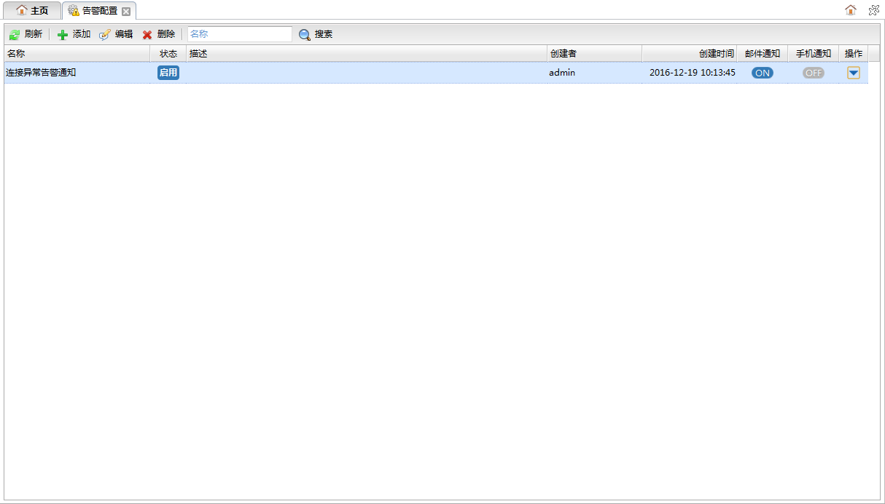
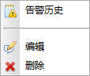

刷新
刷新 添加
添加 编辑
编辑 删除
删除
 。
。对于一些严重异常情况用户可以添加告警配置，当发生异常时可以及时以邮件或短信方式通知用户。系统内置了一些常用的告警类型，此外用户也可以自定义sql语句进行告警，详见自定义SQL监控管理。双击主页左侧导航树的告警配置节点可以打开告警配置面板，如下图所示:

功能按钮列表| 按钮 | 说明 |
|---|---|
| 刷新 |
刷新告警配置列表。 |
| 添加 |
添加告警配置。点击打开告警配置编辑对话框。 |
| 编辑 |
编辑告警配置。选中一个告警配置，点击按钮打开告警配置编辑对话框。 |
| 删除 |
选中一个或多个要删除的告警配置点击按钮可以删除选中的告警配置。 |
|
|
对告警配置列表进行名称或描述的过滤。搜索输入框中输入内容，敲下回车或者点击。 |
告警配置列表
表中为所有告警配置的信息列表。
| 字段 | 说明 |
|---|---|
| 名称 | 告警配置名称。 |
| 状态 | 告警配置是否被禁用。表示正常启用，表示被禁用。 |
| 描述 | 告警配置描述。 |
| 创建者 | 告警配置创建用户。 |
| 创建时间 | 告警配置创建时间。 |
| 邮件通知 | 是否通过邮件通知用户。 |
| 手机通知 | 是否通过手机短信通知用户。 |
| 操作 | 点击  详细介绍请参见告警配置操作菜单列表 |
告警配置操作菜单列表
| 菜单 | 说明 |
|---|---|
| 告警历史 | 由该告警配置产生的告警信息历史记录。 点击打开告警历史面板。 |
| 编辑 |
编辑告警配置。选中一个告警配置，点击按钮打开告警配置编辑对话框。 |
| 删除 |
选中一个或多个要删除的告警配置点击按钮可以删除选中的告警配置。 |